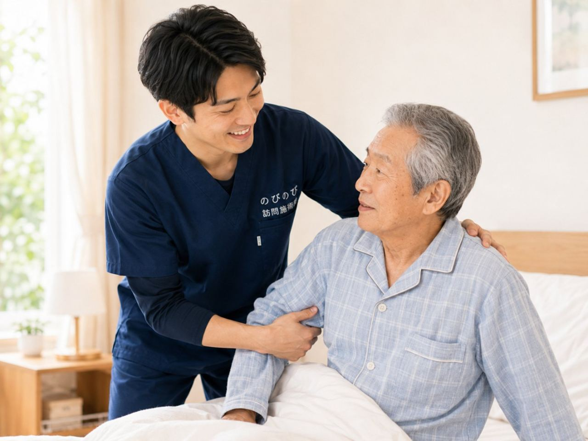

最近、食が細くなった。痩せてきた。なんとなく元気がなく、疲れやすい。年齢を重ねると、食欲が落ちて栄養が足りなくなり、体力や筋力までじわじわ弱っていくことがあります。こうした心身の弱りはフレイルとも呼ばれ、早めに気づいて備えられるかどうかが分かれ道になります。のびのび訪問施術院は、外出して通うのがむずかしくなった方のご自宅にうかがい、はり・きゅう・マッサージを行う訪問施術院です。低栄養や食欲低下とどう向き合うか、そのなかで訪問鍼灸マッサージに何ができるかをお伝えします。
先に要点を。低栄養になると筋力が落ち、フレイル（心身の弱り）が進みやすくなります。体を動かしやすくし、めぐりや食欲を支える在宅ケアが、その流れを和らげます。栄養や食事は医師・管理栄養士の指導が主で、鍼灸マッサージは補助です。医師が必要と認めれば医療保険で受けられ、施術は1回3,950円、1割負担なら約395円が目安です。別途の出張費はかかりません。介護保険の区分支給限度額とは別枠で、要介護認定は不要ですが医師の同意書が必要です。急な体重減少・脱水・飲み込みにくさや発熱があるときは、まず受診を。個人差があります。
はじめに：受診を優先すべきサイン
はじめに、いちばん大切なことをお伝えします。食欲の低下や体重の減少の裏に、体の病気が隠れていることがあります。急に食べられなくなった、短い間に体重が大きく減った、飲み込むとむせる、水分がとれず脱水が心配、お腹の強い痛みや発熱がある、気分がひどく沈んでいる。こうしたときは、鍼灸を考える前に、まずかかりつけ医にご相談ください。
鍼やお灸、マッサージがお手伝いできるのは、こうした急を要する病気ではないと医療機関で確かめられたうえで、体の調子を整え、動く力を保つことを負担にならない程度に支える部分です。栄養や食事そのものは医療や栄養指導の領域で、施術はそれを土台にした補助という位置づけになります。いつもと違う様子を感じたときは、施術より先に受診をご検討ください。
食が細くなると、なぜ体まで弱るのですか
年齢を重ねると、食が細くなる方が増えてきます。食べる量がへると、体をつくる栄養が足りなくなり、筋肉がやせ、体力が落ち、疲れやすくなります。すると動くのがおっくうになって、さらに食欲が落ちる。こうした悪い流れに入ってしまうこともあります。低栄養で筋力が落ち、動く力が弱ると、フレイルはいっそう進みやすくなります。
この心身の弱りを放っておくと、介護が必要な状態へ近づく入り口になりかねません。ですから、早めに気づいて手を打つことが、その後を左右します。とはいえ、あせって無理をする必要はありません。今の体の状態に合わせて、食べて動く力を少しずつ取り戻していくことを目指します。
台所や食卓の様子まで、暮らしごと見る
ご自宅にうかがったら、最近の食欲や一日の食事の量、どんなものを食べているか、体重の変わり方、疲れやすさや動きの様子をていねいにうかがいます。あわせて、手足やお腹の冷え、肩や腰のこわばり、気分の沈みがないかも確かめます。食が細くなる背景には、体の不調や冷え、噛みにくさ、気持ちの落ち込みなど、いくつもの要素がからんでいることがよくあります。
食事の場面や台所の様子、いつ・誰と食べているかまで見えるのは、暮らしのなかにうかがう訪問ならではです。どこから整えれば食べて動く力を取り戻しやすいかを、その方の暮らしごと考えます。
鍼やお灸と機能訓練で、食べる力・動く力を後押し（補助として）
鍼やお灸には、体を温めてめぐりを整え、こわばりや疲れを和らげる働きが期待されています。お腹や腰を温めることで胃腸のはたらきが整いやすく感じられる方や、気分が落ち着くと感じられる方もいらっしゃいます。のびのびでは、鍼やお灸に加えて、落ちてきた筋力を保つための機能訓練も組み合わせます。これらについて別途の料金はいただきません。
ただし、これは食欲そのものを直接どうにかするものではなく、栄養や食事の指導に代わるものでもありません。栄養・食事は医師や管理栄養士の指導が主で、施術はあくまで体を整え、動く力を保つ面から支える補助です。体を動かしやすくしておくことが、活動や食欲のきっかけづくりの後押しになればと考えています。効果の感じ方には個人差があります。
ゆるやかな変化に、早く気づく見守り役として
低栄養やフレイルは、ある日はっきり始まるというより、少しずつ進んでいくものです。そのため、定期的にうかがって体の様子を見ていくなかで、「このところ足が細くなってきた」「前より疲れやすそうだ」といった小さな変化に気づけることがあります。
気になる変化があれば、ご家族やケアマネジャー、かかりつけ医にお伝えし、早めに手を打つきっかけにしていただけます。訪問は、施術そのものだけでなく、こうした変化の見守り役にもなれればと考えています。再入院や状態の悪化を防ぐ在宅ケアの考え方は再入院を防ぐ在宅ケアのページもあわせてご覧ください。
食卓でできる、無理のない工夫（指導は医師・管理栄養士へ）
施術に加えて、日々の工夫も助けになります。少量でも栄養のあるものを回数を分けてとる、好きなものや食べやすいものを取り入れる、水分をこまめにとる、できる範囲で体を動かす、できれば誰かと一緒に食べる。食事は栄養だけでなく、暮らしの楽しみでもあります。
筋肉や体をつくるもとになるたんぱく質は、肉や魚、卵、豆腐、乳製品などに多く含まれます。食が細くなるとあっさりしたものに偏りがちですが、少量でも意識してとることが、筋力を保つ助けになると言われます。ただし、どんな食べ方が合うかは体の状態によりますので、具体的な食事の内容や量は、主治医や管理栄養士の指導にしたがってお進めください。
口の健康が、食べる力を土台から支える
よく食べるには、口の健康も欠かせません。歯が痛む、入れ歯が合わない、口の中が乾く、飲み込みにくい。こうしたことがあると、食べられるものがへり、栄養が足りなくなりがちです。気になることがあれば、歯科や、必要なら飲み込みの専門職にご相談ください。
とくに、飲み込むときにむせる、食事に時間がかかるといった様子は、見のがさないでください。飲み込みやむせのケアについては飲み込み・むせのケアのページもご参照ください。口の健康を保つことは、食べる楽しみと、体をつくる栄養の両方を支え、食べて動ける暮らしの土台になります。
出かけて疲れるより、家で体力を守る
体力が落ちている方にとって、通院はそれだけで大きな負担です。出かけて疲れきってしまい、そのせいでさらに食欲が落ちては、かえって逆効果になりかねません。家にうかがう施術なら、体力をすり減らさずに体をいたわれます。
住み慣れた部屋で、いつもの場所で受けられるので、消耗を抑えながら整えていけます。横になった姿勢のままでも無理なく受けられますので、起き上がるのがつらい日でもご安心ください。食事や暮らしの様子をその場で一緒に確かめられるのも、訪問ならではの良さです。
費用のこと：医療保険で1回3,950円・1割約395円
食欲の低下や低栄養そのものが保険の対象になるわけではありません。体の痛みやこわばりなどについて医師が鍼灸マッサージによる治療の必要を認めた場合に、医療保険で受けられます。自宅での施術は1回の総額3,950円で、自己負担は1割の方で約395円が目安です。別途の出張費や交通費はエリア内一律でかからず、料金に含まれます。
この医療保険での訪問鍼灸マッサージは、介護保険の区分支給限度額とは別枠で受けられます。要介護認定は不要ですが、医師の同意書が必要です。たとえば週1回なら1か月およそ1,580円、週2回なら1か月およそ3,160円（いずれも1割負担の方）が目安です。料金の詳しい説明は料金、制度の全体像は訪問鍼灸マッサージとは（総合ガイド）をご覧ください。当てはまりそうかどうかは対象になる方の条件で確かめられます。
フレイル予防は、みんなで支えるもの
低栄養やフレイルの予防は、鍼灸マッサージだけでできるものではありません。かかりつけ医、訪問看護、栄養の専門職、ケアマネジャー、そしてご家族。食事、運動、体調管理を、みんなで支えることが欠かせません。
鍼灸マッサージはそのなかで、体を整え動く力を保つという面から役割を担う補助の立場です。早めに気づき、みんなで支える。それが、食べて動ける暮らしを長く保つ力になればと考えています。気になる変化があるときや、急な体重減少・脱水・飲み込みにくさ・発熱があるときは、まずかかりつけ医にご相談ください。
よくある質問
鍼灸マッサージで食欲は戻りますか？
鍼灸マッサージが食欲そのものを直接どうにかするものではありません。体を温めてめぐりを整え、動く力を保つことで、食べて動く暮らしの流れを支える立場です。食欲低下の原因は医療機関で診てもらい、栄養の相談は主治医や管理栄養士とあわせて進めるのが安心です。効果の感じ方には個人差があります。
低栄養は施術で改善しますか？
栄養そのものは食事や医療の領域で、施術で改善するものではありません。栄養・食事の指導は医師や管理栄養士が主となり、鍼灸マッサージは体を楽にして「動く・食べる」を支える補助という位置づけです。急な体重減少や飲み込みにくさがあるときは、まず受診をご検討ください。
保険は使えますか？費用はどのくらいですか？
食欲の低下や低栄養そのものではなく、体の痛みやこわばりなどについて医師が治療の必要を認めた場合に、医療保険で受けられます。自宅での施術は1回の総額3,950円、1割負担なら約395円が目安です。介護保険の限度額とは別枠で、要介護認定は不要ですが医師の同意書が必要です。
フレイルでも保険で受けられますか？
フレイルにともなう慢性的なこわばりや痛みについて医師が必要と認め、通院がむずかしければ対象になる場合があります。ただし施術は医療や栄養の指導を土台にした補助という位置づけです。まずは今の状態をお聞かせください。適した進め方をご相談しながら決めていきます。
食が細く弱ってきた家族に、訪問鍼灸マッサージは役立ちますか？
体を動かしやすくし、めぐりを整えることで、活動や食欲のきっかけづくりを後押しします。あわせて、定期的にうかがうなかで小さな変化に気づく見守り役にもなれればと考えています。ただし効果の感じ方には個人差があり、栄養や食事は医師・管理栄養士の指導が主となります。
低栄養が心配なとき、家族にできることはありますか？
少量でも食べやすい工夫や、水分をこまめにとること、無理のない範囲で体を動かすことなどが助けになります。ただし具体的な食事の内容や量は、主治医や管理栄養士の指導にしたがってお進めください。急な体重減少や脱水、飲み込みにくさや発熱があるときは、まず受診をご検討ください。
別に出張費はかかりますか？
いいえ。対応エリア内であれば出張費や交通費は一律でかからず、1回の総額3,950円に含まれています。自己負担は1割の方で約395円が目安です。対応エリアは大阪市・北摂・阪神間です。
どのくらいの頻度で受けるとよいですか？
お体の状態やご希望によりますが、週1回や週2回など、体の様子を見ながら続ける方が多くいらっしゃいます。週1回なら1か月およそ1,580円（1割負担の方）が目安です。頻度は体の様子を見ながら、ご相談しながら決めていきます。

サルコペニアとロコモを防ぐ在宅ケア｜訪問鍼灸マッサージという選択肢
続きを読む
慢性的な頭痛・頭の重さがつらい高齢の方へ｜訪問鍼灸マッサージでできること
続きを読む
「まだ大丈夫」のうちに<br>歩けなくなる前に始める在宅ケアの価値
続きを読む
床ずれ予防と寝返り介助｜在宅でできる褥瘡ケアと訪問鍼灸マッサージ
続きを読む
終末期を住み慣れた家で穏やかに｜最期まで自宅で過ごす方への訪問鍼灸マッサージ
続きを読む